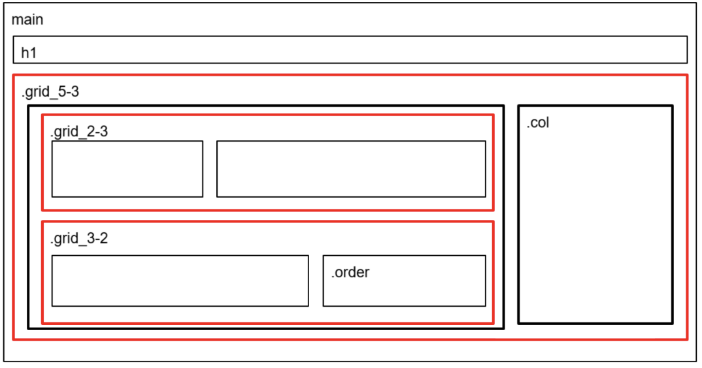

Grundlæggende Web
TEMA 2
LÆRINGSMÅL TEMA 2:
"Dette tema handler om grundlæggende principper for at planlægge, designe og udvikle digitale brugergrænseflader og medieproduktioner. Vi udforsker gestaltlove for bedre forståelse for hvordan mennesker opfatter og reagerer på design. Temaet dækker også brugergrænseflader, designkonventioner, wireframes og layout-diagrammer. Ophavsret betragtes som en vigtig del af arbejdet med digitale medier, da det er vigtigt at følge reglerne, samt respektere hinanden. Derudover introduceres teknologier som HTML og CSS, der er afgørende for frontend-udvikling og design. Sidst men ikke mindst, endte temaet ud i en studiestartsprøve"
STUDIESTARTSPRØVEN
FARVER:

FONTE:
1. Montserrat
https://fonts.google.com/specimen/Montserrat2. Titillium+web
https://fonts.google.com/specimen/Titillium+WebBesøg hjemmesiden her:
Emilieklestrup.dk/website/PROCES
Da det var vores første rigtige opgave, fik udleveret alt indhold og materiale til at løse opgaven. Vi blev introduceret mere for html og css, så vi kunne komme godt igang med kodningen. Fokusset i denne opgave, var primært layout, styling, farver, fonte og gennerelt bare at forstå html og css.
wireframe
En wireframe er som en simpel skitse af en hjemmeside eller app. Den viser, hvor tingene skal være, men uden farver eller detaljer. Wireframes hjælper designere i designprocessen med at planlægge, hvordan alt skal se ud og være organiseret, før de tilføjer farver og billeder. Her ses den udleveret wireframe på index, og min stylet index.

Layout-diagram
I processen blev vi også introduceret til layout diagrammer med CSS grid og flex-box. Hvilket gjorder det nemmere for os, at forstå basic på layout med grid og flex-box. Et layout diagram er enkle illustrationer, der viser hvordan indholdet, som tekst og billeder, skal organiseres på hjemmesiden via HTML og CSS. diagrammet har til formål, at guide designeren, så vedkommende kan opretholde det ønsker layout fra kunden.
Gestaltlove
Gestaltlovene i design refererer til en række designprincipper, der beskriver, hvordan mennesket opfatter og organiserer visuelle informationer. Disse love er nyttige retningslinjer for alle designere, da lovene hjælper med at skabe mere effektive og sammenhængende designs. I min studiestartsprøve har jeg benyttet mig af 4 ud af 5 love.
1. Gestaltlov
Lighed: Elementer, der ligner hinanden, opfattes som en gruppe eller helhed. Dette kan omfatte ens farver, former eller størrelser.
2. Gestaltlov
Nærhed: Elementer, der er tættere på hinanden, opfattes som relaterede eller tilhørende samme gruppe. Afstanden mellem elementer påvirker vores opfattelse af deres forhold.
3. Gestaltlov
Lukning: Folk har en tendens til at se ufuldstændige figurer som fuldstændige, især hvis de er omgivet af en sti eller grænse.
4. Gestaltlov
Fælles skæbne: Elementer, der bevæger sig eller reagerer på samme måde, opfattes som relaterede eller tilhørende samme gruppe.
5. Gestaltlov
Figur og baggrund: Mennesker opfatter automatisk objekter som enten en central figur eller som baggrund, afhængigt af konteksten.
KONKLUSION - HVAD HAR JEG LÆRT?
Studiestartsprøven har været en sammenkobling af designprincipper, typografi og gestaltlove. Samtidig har den udfordret forståelsen for HTML og CSS samt deres praktiske anvendelse. Gestaltlovene og typografien blev brugt til at skabe et intuitivt og æstetisk layout, mens HTML og CSS blev nøglen til at omsætte designet til virkelighed. Prøven har således testet evnen til at kombinere teoretisk viden om design med praktisk teknisk implementering for at opnå et funktionelt og visuelt tiltalende digitalt resultat.